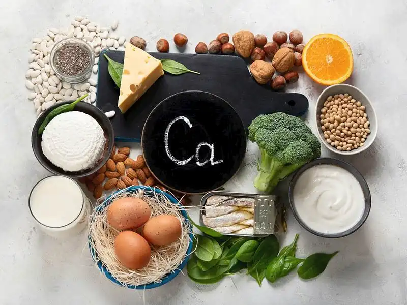

Kalsiyum, vücutta üretilmeyen ve dışarıdan alınması gereken bir mineraldir. Kemik oluşumu ve onarımında kritik bir rol oynar, aynı zamanda kalp fonksiyonları, kan pıhtılaşması, sinir iletimi, hücreler arası iletişim, kas kasılması ve hormon salgılanması gibi önemli biyolojik süreçleri etkiler. Özellikle büyüme çağındaki çocuklar, sporcular ve yaşlılar için kalsiyum metabolizması önemlidir. “Kalsiyum nedir?” sorusuna yanıt arıyorsanız yazının devamını okuyabilirsiniz.
Kalsiyum Nedir?
Mikro besinler hücre, doku ve organların işleyişinin sürdürülmesinde rol alan maddelerdir. Mikro besinler küçük miktarlarda alınan ancak önemli görevlere sahip öğelerdir. Mikro besinler vitamin ve minerallerden oluşur. Vitamin ve mineraller sıklıkla birbiri ile ilişkili metabolik olaylarda görev alır. İnsan vücudunda en çok bulunan mineral kalsiyumdur ve vücut ağırlığının yaklaşık %1,5-2`sini oluşturur. Yetişkin bir bireyin vücudunda yaklaşık 1.200 g kalsiyum minerali bulunur. Kalsiyumun yaklaşık %99`u kemik ve dişlerde tutulur. Kas, kemik ve sinir sistemi, kalp, hücresel fonksiyon ve bağışıklık kalsiyumun çeşitli görevlere sahip olduğu sistemlerdir. Bu nedenle hücre içi ve dışı konsantrasyonları birtakım mekanizmalar ile muhafaza edilir. Bu mekanizmanın bozulması ve kalsiyum yetersizliği yaşayan vücut bu durumu önlemek için kemikten kalsiyum çekebilir ve sonucunda mineral dengesi bozulabilir.
Büyüme ve gelişme döneminde kemik oluşumunda, bağırsaklardan emilimin bozulmasında, renal ve ciltten atım sağlandığında, hamilelik ve emzirme dönemlerinde kalsiyum kaybı artar. Biyolojik işlevi yüksek olan kalsiyum yeterli ve dengeli bir diyetle yeterli miktarda sağlanabilir. Ancak uzun vadeli kalsiyum eksikliği durumunda doruk kemik kütlesine ulaşım zorlaşabilir. Ayrıca hayati bir doku görevi gören kemiklerdeki kalsiyum miktarı korunamaz. Sonucunda kemik kütlesi ve gücünde kayıplar yaşanabilir. Kemik ve kas fonksiyonlarının önemli bir ölçüt olduğu çeşitli spor dallarında kalsiyum gibi mineral gereksiniminin karşılanması gerekir. Özellikle dayanıklılık sporcularında kemiklerin strese karşı dayanıklılığın sağlanmasında kalsiyumun rolü önemlidir. Bu nedenle sporcularda gıda ve takviye olarak kalsiyum yeri doldurulamaz bir mineraldir.
Kalsiyum Ne İşe Yarar?
Vücutta doku ve organların işleyişinin sürdürülmesinde kalsiyum önemli bir mineraldir. Vücuda alınan kalsiyumun çoğunluğu kemik ve dişlerde, daha az bir kısmı kanda bulunur. Vücutta üretilmeyen kalsiyum besinler ve takviyeler ile sağlanabilir. Vücuda yeterli kalsiyum alınmadığında kemiklerden kalsiyum çekilmeye başlar. Bu durum kemiklerde zayıflamaya ve kemik kaybına yol açabilir. Dolayısıyla kalsiyum içeren gıdalar yoluyla yeterli miktarda kalsiyum alınması gerekir. Kalsiyum esas olarak kemik ve dişlere yapı ve güç kazandırmanın yanı sıra şu görevlere sahiptir:
• Kas kasılması
• Sinir sinyali iletimi
• Hücreler arası sinyal
• Hormon salınımı
• Kalp atışının düzenlenmesi
• Hücre bölünmesi
• Bağışıklık fonksiyonu
• Kanın pıhtılaşması
• Kan basıncı ve su dengesinin düzenlenmesi
Sağlıklı ve güçlü yapıda kemikler oluşturmak için kalsiyuma ihtiyaç duyulur. Kanda bulunan kalsiyum kalp, kaslar ve sinirler gibi diğer dokular tarafından kullanılabilir. Kemik gücünün korunmasında kalsiyum fosfat gibi diğer minerallerle birleşebilir. Ayrıca kalsiyum metabolizmasında D vitaminin önemli bir yeri vardır. Kalsiyum ve D vitamininden biri eksik olduğunda kemiklerin sağlıklı yapısı bozulmaya başlayabilir. Bu durum yaşlanma ile daha hızlı gerçekleşebilir.
Kalsiyum Eksikliği Nedir?
Kalsiyum eksikliği veya “hipokalsemi” kandaki kalsiyum seviyelerinin olması gerekenden çok daha düşük değerlerde olması durumudur. Birçok farklı etken hipokalsemi gelişmesine katkıda bulunabilir. Kalsiyum eksikliği tedavi edilebilir bir sağlık sorunudur ve geçici veya kronik olabilir. Hipokalsemi genellikle anormal parathormon ve D vitamini seviyeleri sonucu oluşan bir tablodur. Hafif kalsiyum eksikliği belirtileri kas krampları, kuru ve pullu bir cilt ve kırılgan tırnaklar ile kendini gösterebilir. Erken teşhisi yapılmayan veya tedavi edilmeyen hipokalsemi sinir sisteminde olumsuz etkilere sebebiyet verebilir. Huzursuzluk ve sinirlilik, bilinç bulanıklığı ve halüsinasyonlar, depresyon ve bellek sorunları psikolojik etkiler arasındadır. Kanda çok düşük kalsiyum şiddetli semptomlar görülmesine yol açabilir. Bunlar arasında aritmi, kas spazmları, nöbetler ve uzuvlarda karıncalanma yer alabilir.
Kalsiyum emilimi, D vitamini varlığına bağlıdır ve emilimdeki artış kemiklerin yeniden şekillenmesi ve onarımında önemli bir rol oynar. D vitamini eksikliği, kalsiyum emilimini %50 oranında azaltabilir, bu nedenle bağırsaklarda yalnızca %10-15'i emilir. D vitamini eksikliği veya direnci, otoimmün hastalıklar, böbrek ve karaciğer hastalıkları, hipo veya hipermagnezemi, bazı ilaçlar, Fanconi sendromu ve aç kemik sendromu gibi durumlar da kalsiyum eksikliğine neden olabilir. Kalsiyum eksikliği tedavisi genellikle kalsiyum ve D vitamini takviyeleri kullanımını içerir; hipoparatiroidizm durumunda ise tercih edilebilecek bir seçenek paratiroid hormonunun sentetik formudur.
Kalsiyum Yüksekliği Nedir?
Kalsiyum yüksekliği olarak bilinen “hiperkalsemi” kanda normalden daha yüksek kalsiyum seviyesini açıklar. Kalsiyumun çoğunluğu kemiklerde bulunur ancak kanda da belirli miktarlarda mevcuttur. Kalsiyum değerleri kalsitonin ve parathormon tarafından kontrol edilir. Kandaki kalsiyum seviyeleri dikkatli bir şekilde düzenlenir ancak bazı etkenler hiperkalsemiye neden olabilir. Genellikle aşırı aktif olan paratiroid bezleri, bazı ilaçlar, aşırı kalsiyum ve D vitamini takviyesi, kanser ve tıbbi bozukluklar kalsiyum yüksekliği gelişmesine katkıda bulunabilir. Kalp, kaslar ve sinirlerin fonksiyonunda, kemik kütlesinin korunmasında, kanın pıhtılaşmasında görev alan kalsiyum kanda fazla miktarda bulunduğunda bazı olumsuz etkilere neden olabilir. Hiperkalsemi kalp ve beyin fonksiyonlarını etkileyebilir, böbrek taşı oluşumuna katkıda bulunabilir ve kemiklerin zayıflamasına yol açabilir. Hiperkalsemi semptomları hafif veya şiddetli olabilir.
Kalsiyum yüksekliği çoğu zaman hayati tehlikeye neden olmaz ve kan testleri ile teşhis edilebilir. iperkalsemi bazı bireylerde herhangi bir semptom göstermeyebilir. Ancak şiddetli seyreden hiperkalsemi vakalarında birtakım komplikasyonlar oluşabilir. Aritmi (anormal kalp ritimleri), böbrek yetmezliği, bilinç bulanıklığı ve koma kalsiyum yüksekliğinin yol açtığı ciddi rahatsızlıklar arasındadır. Hiperkalsemi tedavisi altta yatan nedene bağlı olarak değişir. Kalsiyum ve D vitamini takviyelerinin sınırlandırılması, paratiroid bezlerinin çıkarılması, kemoterapi ve radyoterapi şeklinde tedavi seçenekleri bulunur. Hiperkalsemi her zaman önlenemeyebilir ancak kalsiyum takviyeleri ve kalsiyum bazlı antiasit tablet kullanımından kaçınmak kalsiyum yüksekliğini önlemeye yardımcı olabilir. “Kalsiyum hangi besinlerde bulunur?” sorusunun cevabı için yazının devamını okuyabilirsiniz.
Kalsiyum İçeren Besinler Nelerdir?
“Kalsiyum nelerde var?” sorusuna cevap olarak kalsiyum doğal olarak besinlerde ve takviye edilmiş paketli gıdalarda bulunur. Diyette kalsiyum kaynaklarına yer verilmesi ile günlük ihtiyaç karşılanabilir. Özellikle sporcular için kalsiyum takviyelerine başvurmadan önce diyetle çeşitli ve dengeli kalsiyum alımı sağlanabilir. Kalsiyum içeren besinler şu şekilde listelenebilir:
• Çedar, ricotta, tofu, beyaz ve diğer peynirler
• İnek sütü ve yoğurt
• Yumurta
• Kemikli konserve sardalya, somon ve karides
• Lahana, Çin lahanası, brokoli, ıspanak, soya fasulyesi, portakal ve incir
• Zenginleştirilmiş badem, pirinç ve soya sütü
• Zenginleştirilmiş portakal suyu ve diğer meyve suları
• Zenginleştirilmiş kahvaltılık gevrek, ekmek ve tahıllar.
Kalsiyum eksikliğinin önlenmesi ve tedavisinde diyet ve takviyeler önemlidir. Yetersiz beslenme durumunda olan sporculara kalsiyum takviyesi önerilebilir. Multivitamin ve kalsiyum takviyeleri farklı miktarlarda kalsiyum içerebilir. Kalsiyum takviyeleri genellikle kalsiyum sitrat ve kalsiyum karbonat formlarında bulunur. Kalsiyum sitrat aç veya tok karnına iyi emilirken, kalsiyum karbonatın emilimi besinlerle birlikte tüketildiğinde daha yüksektir. Kalsiyum sülfat, kalsiyum askorbat, kalsiyum fosfat ve kalsiyum glukonat gibi diğer formları da zenginleştirilmiş gıdalarda ve takviyelerde bulunabilir. Kalsiyum takviyeleri sindirim sistemi semptomlarına neden olabilir, özellikle tek seferde yüksek doz alındığında. Bu semptomlar arasında şişkinlik, gaz ve kramplar bulunabilir. Bu nedenle, kalsiyum dozlarının gün içine yayılması ve doktor kontrolünde kalsiyum formunun değiştirilmesi önerilebilir.
Sporcular İçin Kalsiyum Tüketimi Neden Önemlidir?
Sporcular doruk kemik kütlesine 20 yaş civarında ulaşır ve 30`lu yaşlarda biriken kemik miktarı maksimum seviyelerdedir. Bununla birlikte yaşlanma ile artan kemik kaybının dengelenmesi amacıyla sürekli ve yeterli düzeyde osteojenik uyarı oluşturulması zor olabilir. Dolayısıyla sporcuların kemik kalitesi ve kütlesini en üst düzeye çıkarmaları kritik bir öneme sahiptir. Sporcularda sporun bırakılmasından sonra kemik kütlesi ve gücü tamamen geri kazanılamaz. Ayrıca zayıf kemik sağlığı stres kırığı yaralanmalarının gelişmesine zemin hazırlayabilir. Bu durum gelecekteki sağlık risklerinin yanı sıra spor performansında düşme ve antrenman süresinde kayıplara yol açabilir. Stres kırıkları ve medial tibial stres sendromu gibi kısa vadeli kemik yaralanmaları ile osteoporoz ve osteopeni gibi uzun vadeli rahatsızlıkların gelişme riskini önlenmesi önemlidir.
Sporcularda kısa ve uzun vadeli potansiyel risklere karşı kemik gücünü zayıflatan faktörlerin ortadan kaldırılması gerekir. Genetik, cinsiyet ve ırk gibi değiştirilemez etkenlerin aksine yaşam tarzı alışkanlıkları kemik ve kas sistemi üzerinde birtakım etkilere sahip olabilir. Özellikle beslenme ve diyet kemik sağlığının iyileştirilmesinde dikkate alınması gereken değiştirilebilir bir seçenektir. Vücuttaki kalsiyum mineralinin %99`u kemiklerde depolanır. Ek olarak diyetle düşük kalsiyum alınması parathormonun aktivasyonu sonucu kemiklerde yıkıma neden olabilir. Uzun antrenman esnasında dayanıklılık sporcuları için dermal kalsiyum kayıpları olumsuz sonuçlar yaratabilir. Bu nedenle antrenman öncesi beslenmede kalsiyumun yeterli miktarlarda alınmasına dikkat edilmesi gerekir.
Kalsiyum eksikliğinin önlenmesi ve tedavisinde diyet ve takviyeler önemlidir. Yetersiz beslenme durumunda olan sporculara kalsiyum takviyesi önerilebilir. Multivitamin ve kalsiyum takviyeleri farklı miktarlarda kalsiyum içerebilir. Kalsiyum takviyeleri genellikle kalsiyum sitrat ve kalsiyum karbonat formlarında bulunur. Kalsiyum sitrat aç veya tok karnına iyi emilirken, kalsiyum karbonatın emilimi besinlerle birlikte tüketildiğinde daha yüksektir. Kalsiyum sülfat, kalsiyum askorbat, kalsiyum fosfat ve kalsiyum glukonat gibi diğer formları da zenginleştirilmiş gıdalarda ve takviyelerde bulunabilir. Kalsiyum takviyeleri sindirim sistemi semptomlarına neden olabilir, özellikle tek seferde yüksek doz alındığında. Bu semptomlar arasında şişkinlik, gaz ve kramplar bulunabilir. Bu nedenle, kalsiyum dozlarının gün içine yayılması ve doktor kontrolünde kalsiyum formunun değiştirilmesi önerilebilir.